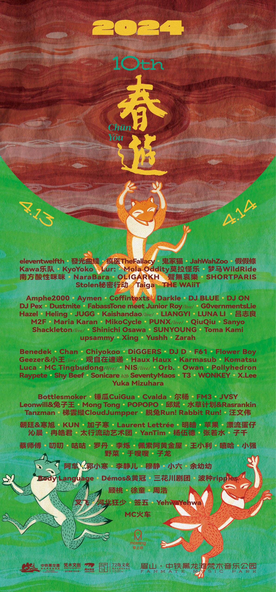

2024
春游迎来了第十周年。
到了现在，
春游有了春游舞台、
维他命舞台、
想象力舞台、
早上好舞台、
嬉春林舞台、
过载空间，
六个不同的表演区域。
也有了美食街、
啤酒街、
展览、
工作坊、
露营区，
以及越来越多可以一起参与的空间。
更多的创意工作者、
音乐人、
乐队、
艺术家、
美食和精酿品牌来到这里。
也有越来越多来自四川以外的观众，
开始认识春游，
然后加入这个轻松、随意的大家庭。
更让我们觉得珍贵的是，
很多人，我们几乎每年都会见到。
看着他们从年轻时来到春游，
在这里认识朋友、恋爱，
后来组建家庭，
再带着自己的小朋友，
甚至宠物一起回来。
时间大概就是这样。
很多事情发生的时候，
你并不会觉得它有多特别。
直到有一天回头看，
才发现大家已经一起走了这么远。
2024年，
春游十岁了。
它终于从最开始的一次聚会，
慢慢长成了一个真正的节日。
而到了今天，
我们也终于可以认真地叫它——
春游音乐节。
CHUNYOU reached its tenth anniversary.
By now,
there was the CHUNYOU Stage,
the Vitamin Stage,
the Imagination Stage,
the Morning Stage,
Spring Jamming,
and Noise Space—
six different performance areas.
There was also a Food Village,
a Beer Zone,
exhibitions,
workshops,
camping areas,
and more and more spaces for people to take part in.
More creatives,
musicians,
bands,
artists,
food makers,
and craft beer brands began to join us.
And more people from outside Sichuan
started discovering CHUNYOU,
eventually becoming part of this loose, easygoing family.
What felt even more meaningful
was seeing so many familiar faces return year after year.
We watched people first come to CHUNYOU when they were young,
meet friends, fall in love,
and eventually start families of their own.
Then, years later,
they came back with their children,
and sometimes their pets.
That is probably how time works.
While things are happening,
they rarely feel extraordinary.
Only when you look back
do you realize how far everyone has travelled together.
In 2024,
CHUNYOU turned ten.
What had begun as a simple gathering
had slowly grown into a festival of its own.
And finally,
we felt we could truly call it—
CHUNYOU FESTIVAL.